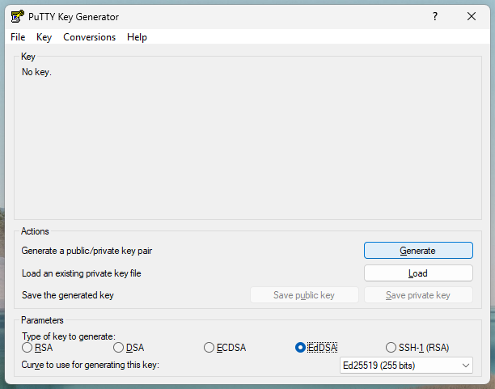
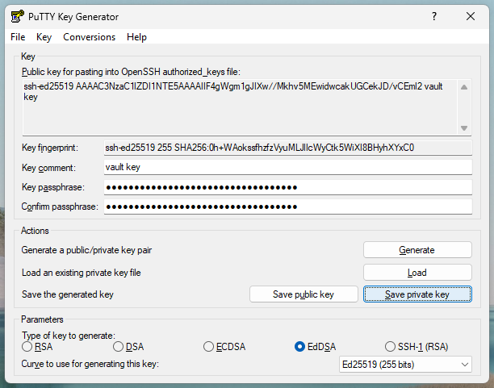
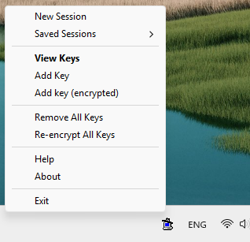

Using a master SSH key with derivepassphrase vault on existing accounts¶
See also
→ Tutorial: Setting up derivepassphrase vault for three accounts, with a master passphrase
→ Tradeoffs between a master passphrase and a master SSH key
The scenario¶
This tutorial builds upon the previous tutorial for setting up derivepassphrase vault for three accounts, with a master passphrase.
We have a working derivepassphrase installation, and a derivepassphrase vault configuration for three services email, bank and work, using a master passphrase.
Installing derivepassphrase with SSH key support¶
Note: Shell Notation
derivepassphrase is a command-line application: it runs in the system shell, such as /bin/sh on UNIX and Powershell on Windows.
In the following shell session transcripts, $ and ‘>’ denote the prompt from the system shell for user input.
Type in the remainder of line, but not the prompt itself.
Other lines are output lines, which should appear on your shell.
For Windows-specific commands, we use the PS> prompt; otherwise, we use UNIX-style $ and > prompts.
You have already installed derivepassphrase.
Once again, check that the installation was successful.
$ devirepassphrase vault --version
derivepassphrase 0.5
Using cryptography 44.0.0
Using click 8.1.8
Supported features: master SSH key.
(…or similar output.) Furthermore, verify that “master SSH key” is among the listed supported features.1 Without support for SSH keys, this tutorial cannot be completed.
Setting up an SSH agent and SSH key generator¶
derivepassphrase cannot generate SSH keys or do SSH key operations itself; instead, it relies on widespread and well-tested third-party software such as OpenSSH or PuTTY for this purpose.
We need to install such software as well.
Setup steps
You likely already have OpenSSH installed, or can easily install them via your package manager or via the official OpenSSH distribution.
We only need access to the ssh-agent, ssh-add and ssh-keygen client tools; in particular, we do not need the OpenSSH server.
$ ssh -V
OpenSSH_10.2p1, OpenSSL 3.5.4 30 Sep 2025
Start an SSH agent if none is running yet.
(Some desktop environments automatically launch an agent on startup.)
We can check this via ssh-add -l.
$ ssh-add -l
Could not open a connection to your authentication agent.
The agent is not running. So start an agent manually:
$ eval "$(ssh-agent -s)"
and arrange for it to be shut down upon exiting this shell session:
$ trap "kill $SSH_AGENT_PID" 0
$ ssh-add -l
The agent has no identities.
The agent is already running.
$ ssh-add -l
256 SHA256:0h+WAokssfhzfzVyuMLJlIcWyCtk5WiXI8BHyhXYxC0 (ED25519)
3072 SHA256:1OHE0HrVlaSzJn2aQXQIKRu0tfO1CEMefy95K2Bt0xA (RSA)
(… or similar output, perhaps with text.)
The agent is running, and already contains some keys.
Install PuTTY e.g. from the official PuTTY distribution website, or from the Microsoft Store (if supported).
We only need access to the pageant and puttygen tools.
Start pageant if it isn’t running yet.
An icon of a CRT computer monitor wearing a black hat should appear in the task bar.
Generating a master SSH key, and loading it into the agent¶
Further reading
→ Prerequisites for the SSH key, for use with derivepassphrase
vault
Operational risk: reusing "login" SSH keys for passphrase derivation
SSH keys are typically used as access tokens for logging in on a remote system. You are strongly discouraged from reusing such an existing “login” key for passphrase derivation. A master SSH key is a long-lived secret, and should never need to be rotated2, unless compromised or lost. Rotating a master SSH key means forcibly changing all passphrases that are derived from this key. By contrast, a login SSH key is an access token, and may be rotated for other policy-related reasons (e.g. algorithm or key size upgrades, key consolidation, …).
Beyond key rotation, reusing an existing login key also means that, when compromised, all your logins and all your passphrases will be affected.
We generate a new Ed25519-type key for use with derivepassphrase.
Generating a key (operating system-specific)
We store the key as my-vault-ed25519-key in ~/.ssh, using the comment “vault key”.
$ ssh-keygen -t ed25519 -f ~/.ssh/my-vault-ed25519-key -C "vault key"
Generating public/private ed25519 key pair.
Enter passphrase for ".../.ssh/my-vault-ed25519-key" (empty for no passphrase):
Enter same passphrase again:
Your identification has been saved in .../.ssh/my-vault-ed25519-key
Your public key has been saved in .../.ssh/my-vault-ed25519-key.pub
The key fingerprint is:
SHA256:0h+WAokssfhzfzVyuMLJlIcWyCtk5WiXI8BHyhXYxC0 vault key
The key's randomart image is:
+--[ED25519 256]--+
|o B=+ |
|.=oE = . |
|.oX @ + |
| = + o * . . |
| + o * S B |
| + * + O o |
| * o . |
| o |
| |
+----[SHA256]-----+
Start puttygen.
Under “Parameters”, as “Type of key to generate”, select EdDSA, and as “Curve to use for generating this key”, select Ed25519 (255 bits).
Then, under “Actions”, select “Generate”, and follow the on-screen instructions.

Set the comment to “vault key”, and set a strong key passphrase (recommended).
Finally, select “Save private key”, and store the key as my-vault-ed25519-key.ppk in My Documents.
We can now close puttygen.

Note: reproducibility
SSH key generation is non-reproducible: your key will naturally differ from ours, as will the key fingerprint, the randomart image (if any), and – in general, for sufficiently loose constraints – the passphrases derived from this master SSH key. This is intentional – you wouldn’t want others to be able to access all of your passphrases just because they installed the same software as you and have access to, or can guess, your configuration.
This also means that you will get different derived passphrases from us unless you use exactly the same master SSH key as we are using (OpenSSH format, no key passphrase) (PuTTY format, no key passphrase).3
We then need to load the key into the agent, so that derivepassphrase can interact with it.
The key will persist as long as the agent is running, and will need to be re-added the next time the agent is started.
Loading the key into the agent (operating system-specific)
We instruct the agent to pop up a confirmation prompt each time the key is used, as a safety precaution.
$ ssh-add -c ~/.ssh/my-vault-ed25519-key
Enter passphrase for .../.ssh/my-vault-ed25519-key (will confirm each use):
Identity added: .../.ssh/my-vault-ed25519-key (vault key)
The user must confirm each use of the key
Now each call to derivepassphrase vault using this SSH key (only when deriving a passphrase) will ellicit a confirmation prompt by the agent.
Conversely, any confirmation prompt for this key at other times originates from a different program, and is therefore suspicious and should not be granted.
(See operational risks above.)
Open pageant’s context menu (via right-click), then select “Add key (encrypted)”.
In the file chooser dialog that opens, select my-vault-ed25519-key.ppk in My Documents.
The key should now be loaded.

To verify this, select “View keys” from pageant’s context menu to bring up the list of keys pageant is currently holding in memory.
The Ed25519 key we just created should be listed there, along with the “vault key” comment.
Upon first use of the key, pageant will issue a passphrase prompt for the key passphrase.
The key will be unlocked, and thus usable without prompts, until it is re-encrypted in the “View keys” menu.
Re-encrypt/lock the key whenever you are done using it with derivepassphrase to minimize the time window during which the key is accessible to other programs.
(See operational risks above.)
Reconfiguring the accounts¶
Reminder: interactive input
In code listings, sections enclosed in [[...]] signify input to the program, for you to type or paste in.
Also, it is normal for passphrase prompts to not “echo” the text you type in.
In the previous tutorial that set up the three accounts, we stored the settings for each account to derivepassphrase vault’s configuration, meaning that we only have to enter the master passphrase to access the account passphrases.
$ derivepassphrase vault --export - # to confirm the configuration
{"services": {"email": {"length": 12, "repeat": 3, "lower": 1, "upper": 1, "number": 1, "space": 0}, "bank": {"length": 5, "lower": 0, "upper": 0, "number": 5, "space": 0, "dash": 0, "symbol": 0}, "work-2024Q4": {"length": 8, "upper": 1, "number": 1, "space": 0, "dash": 1, "symbol": 0}}}
$ derivepassphrase vault -p email
Passphrase: [[I am an insecure master passphrase, but easy to type.]]
kEFwoD=C?@+7
$ derivepassphrase vault -p bank
Passphrase: [[I am an insecure master passphrase, but easy to type.]]
98517
$ derivepassphrase vault -p work-2024Q4
Passphrase: [[I am an insecure master passphrase, but easy to type.]]
-P268G0A
We first reconfigure the email account to use the master SSH key.
derivepassphrase presents us with a key selector for all SSH keys suitable for passphrase derivation, including the one we generated earlier.
We confirm the selection.
$ derivepassphrase vault --config -k email
Suitable SSH keys:
[1] ssh-ed25519 ...gm1gJIXw//Mkhv5MEwidwcakUGCekJD/vCEml2 vault key
Use this key? [[yes]]
We choose the correct key.
$ derivepassphrase vault --config -k email
Suitable SSH keys:
[1] ssh-ed25519 ...gm1gJIXw//Mkhv5MEwidwcakUGCekJD/vCEml2 vault key
[2] ssh-rsa ...YAWfeXycsvJZ2uaYRjMdZeJGNAnHLUGLkBscw5aI8= some other key
Your selection? (1-2, leave empty to abort): [[1]]
We confirm that the reconfiguring has worked because the configuration for the email service now references the key we selected earlier.
$ derivepassphrase vault --export -
{"services": {"email": {"key": "AAAAC3NzaC1lZDI1NTE5AAAAIIF4gWgm1gJIXw//Mkhv5MEwidwcakUGCekJD/vCEml2", "length": 12, "repeat": 3, "lower": 1, "upper": 1, "number": 1, "space": 0}, "bank": {"length": 5, "lower": 0, "upper": 0, "number": 5, "space": 0, "dash": 0, "symbol": 0}, "work-2024Q4": {"length": 8, "upper": 1, "number": 1, "space": 0, "dash": 1, "symbol": 0}}}
We further confirm that the derived passphrase adheres to the rules laid out for the email service.
Since we configured the service correctly, derivepassphrase knows to automatically use our previously selected SSH key.
$ derivepassphrase vault email
BNbSA\E]#s8H
Reminder: reproducibility
Unless you are using our SSH test key, your SSH key will differ from ours, as will the derived passphrases.
We can now log in to our email account with the old passphrase
(derivepassphrase vault -p email) and change it to the new one
(derivepassphrase vault email).
Using the master SSH key by default¶
To get the other two services to use the master SSH key as well, we could reconfigure them manually, as we did with the email service.
However, that is unnecessarily repetitive.
Instead, we will set up derivepassphrase to use this master SSH key by default.
$ derivepassphrase vault --config -k
Suitable SSH keys:
[1] ssh-ed25519 ...gm1gJIXw//Mkhv5MEwidwcakUGCekJD/vCEml2 vault key
Use this key? [[yes]]
$ derivepassphrase vault --config -k
Suitable SSH keys:
[1] ssh-ed25519 ...gm1gJIXw//Mkhv5MEwidwcakUGCekJD/vCEml2 vault key
[2] ssh-rsa ...YAWfeXycsvJZ2uaYRjMdZeJGNAnHLUGLkBscw5aI8= some other key
Your selection? (1-2, leave empty to abort): [[1]]
The selected key will then appear in the global section of the configuration.
$ derivepassphrase vault --export -
{"global": {"key": "AAAAC3NzaC1lZDI1NTE5AAAAIIF4gWgm1gJIXw//Mkhv5MEwidwcakUGCekJD/vCEml2"}, "services": {"email": {"key": "AAAAC3NzaC1lZDI1NTE5AAAAIIF4gWgm1gJIXw//Mkhv5MEwidwcakUGCekJD/vCEml2", "length": 12, "repeat": 3, "lower": 1, "upper": 1, "number": 1, "space": 0}, "bank": {"length": 5, "lower": 0, "upper": 0, "number": 5, "space": 0, "dash": 0, "symbol": 0}, "work-2024Q4": {"length": 8, "upper": 1, "number": 1, "space": 0, "dash": 1, "symbol": 0}}}
The email account still has an explicit configured SSH key, which overrides the global default setting; it just so happens that in this case both keys are the same.
We can therefore remove the useless key override from the email account.
$ derivepassphrase vault --config --unset=key email
$ derivepassphrase vault --export -
{"global": {"key": "AAAAC3NzaC1lZDI1NTE5AAAAIIF4gWgm1gJIXw//Mkhv5MEwidwcakUGCekJD/vCEml2"}, "services": {"email": {"length": 12, "repeat": 3, "lower": 1, "upper": 1, "number": 1, "space": 0}, "bank": {"length": 5, "lower": 0, "upper": 0, "number": 5, "space": 0, "dash": 0, "symbol": 0}, "work-2024Q4": {"length": 8, "upper": 1, "number": 1, "space": 0, "dash": 1, "symbol": 0}}}
The generated passphrase is still the same.
$ derivepassphrase vault email
BNbSA\E]#s8H
Finally, the generated passphrases for the bank and work-2024Q4 accounts are affected by the global SSH key as well, as intended.
$ derivepassphrase vault bank
06041
$ derivepassphrase vault work-2024Q4
PE1qg_M7
However, the new passphrase for the work account does not yet adhere to the company’s passphrase policy because we are using the “wrong” special characters.
We therefore change the passphrase generation parameters such that only dashes and no underscores are emitted.
$ derivepassphrase vault --config --lower=1 work-2024Q4
$ derivepassphrase vault work-2024Q4
pEY-qg7n
We can then log into our bank and work accounts using the old passphrases (with -p) and change them to the new ones (without -p).
Summary¶
We have reconfigured derivepassphrase (with the vault passphrase derivation scheme) for use with a master SSH key, and modified three existing accounts to use that key.
Our configuration should look like this:
$ derivepassphrase vault --export -
{"global": {"key": "AAAAC3NzaC1lZDI1NTE5AAAAIIF4gWgm1gJIXw//Mkhv5MEwidwcakUGCekJD/vCEml2"}, "services": {"bank": {"dash": 0, "length": 5, "lower": 0, "number": 5, "space": 0, "symbol": 0, "upper": 0}, "email": {"length": 12, "lower": 1, "number": 1, "repeat": 3, "space": 0, "upper": 1}, "work-2024Q4": {"dash": 1, "length": 8, "lower": 1, "number": 1, "space": 0, "symbol": 0, "upper": 1}}}
We should also get the following output when asking for those passphrases again:
$ derivepassphrase vault email
BNbSA\E]#s8H
$ derivepassphrase vault bank
06041
$ derivepassphrase vault work-2024Q4
pEY-qg7n
This completes the tutorial.
-
If “master SSH key” is not listed as a supported feature, then this
derivepassphraseinstallation cannot use master SSH keys. Sorry. This likely means that we cannot talk to the SSH agent because it uses a communication channel that we cannot or don’t know how to access. ↩ -
key rotation: the exchange of a cryptographic key against a newer one, for the same purpose/access/capabilities as the old one, as a matter of policy, to artificially limit the scope of the old key. Usually done on a schedule. Typical policy reasons include protection against loss of access to the key material, and upgrades to different algorithms or key sizes (where possible). ↩
-
Technically, we are lying about the key comment you will be seeing when using our test key. ↩